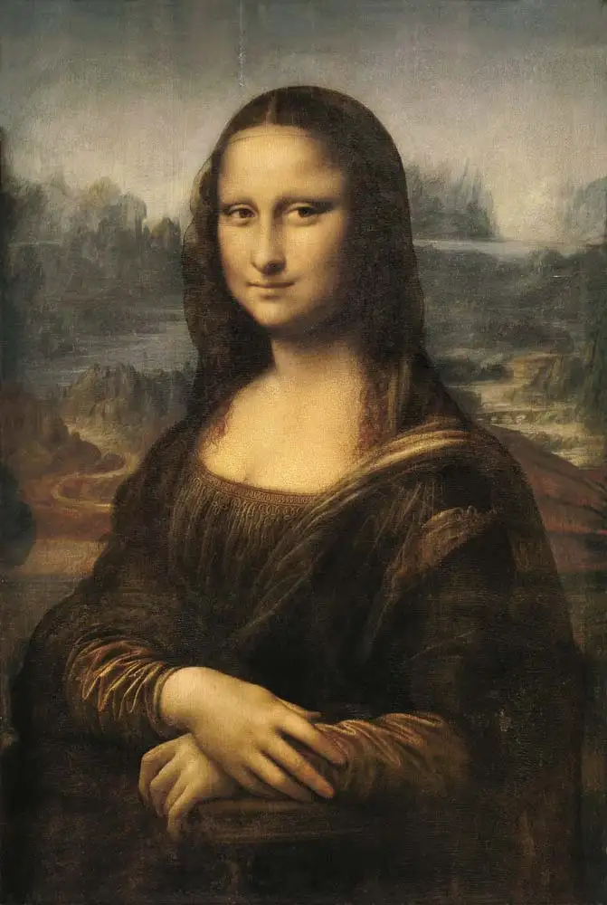
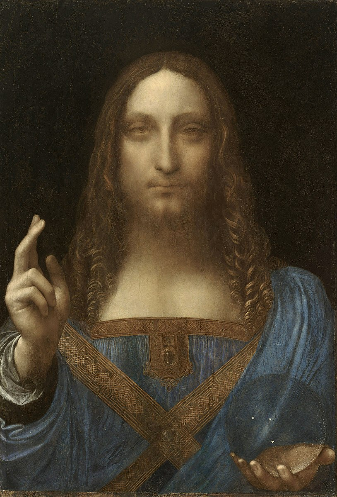
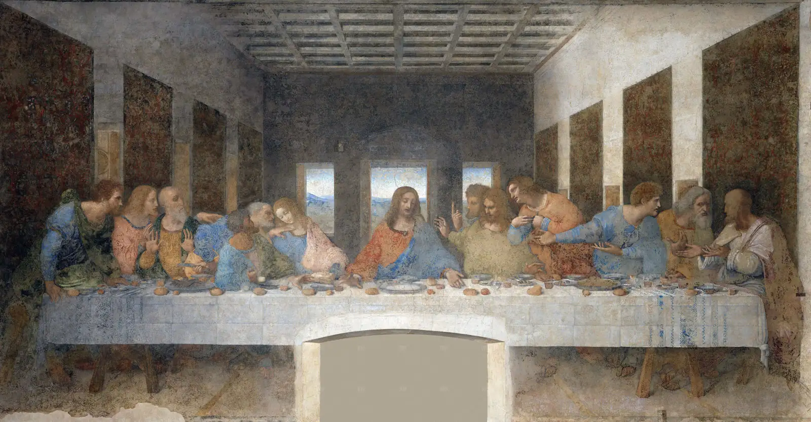

Biography
Leonardo di ser Piero da Vinci (15 April 1452 – 2 May 1519) was an Italian polymath of the High Renaissance who was active as a painter, draughtsman, engineer, scientist, theorist, sculptor, and architect. While his fame initially rested on his achievements as a painter, he also became known for his notebooks, in which he made drawings and notes on a variety of subjects, including anatomy, astronomy, botany, cartography, painting, and paleontology. Leonardo is widely regarded to have been a genius who epitomized the Renaissance humanist ideal, and his collective works compose a contribution to later generations of artists matched only by that of his younger contemporary, Michelangelo.
Major Achievements
- Designed a tank more than 400 years before it become a realty
- Invented a mechanical knight knowns as Leonardo's robot
- Did an unprecedented detailed study of Anatomy of humans and animals
- Created the most famous painting in the world
Art Works
Mona Lisa
The Mona Lisa is a half-length portrait painting by Italian artist Leonardo da Vinci. Considered an archetypal masterpiece of the Italian Renaissance, it has been described as "the best known, the most visited, the most written about, the most sung about, the most parodied work of art in the world". The painting's novel qualities include the subject's enigmatic expression, the monumentality of the composition, the subtle modelling of forms, and the atmospheric illusionism.Salvator Mundi
The painting was sold at auction for US$450.3 million on 15 November 2017 by Christie's in New York to Prince Badr bin Abdullah, setting a new record for the most expensive painting ever sold at public auction. The painting depicts Christ in an anachronistic blue Renaissance dress, making the sign of the cross with his right hand, while holding a transparent, non-refracting crystal orb in his left, signaling his role as Salvator Mundi and representing the 'celestial sphere' of the heavens.Last Supper
The Last Supper is a mural painting by the Italian High Renaissance artist Leonardo da Vinci, dated to c. 1495–1498. The painting represents the scene of the Last Supper of Jesus with the Twelve Apostles, as it is told in the Gospel of John – specifically the moment after Jesus announces that one of his apostles will betray him. Its handling of space, mastery of perspective, treatment of motion and complex display of human emotion has made it one of the Western world's most recognizable paintings and among Leonardo's most celebrated works. Some commentators consider it pivotal in inaugurating the transition into what is now termed the High Renaissance.